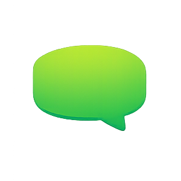

Incoming WhatsApp chats via QikChat arrive in Odoo as structured sessions — with six media types, live state management, and direct CRM linkage. Reply, send files, and close sessions without leaving your CRM.

opportunity_id link to a CRM lead, and crm.lead carries a back-reference to the session.QikChat is a WhatsApp Business API provider specialising in rich-media conversations. This module catches every incoming message at /qikchat/webhook and stores it in a session model (qikchat.message) keyed by phone number — so repeat messages from the same customer always extend the existing session record.
States flow from New → Running → Close. Agents send text replies, product images, or documents from the form view — all routed through the QikChat API. Every inbound message is also logged to the chatter as a mail.message, giving a complete timestamped timeline.
An inbound WhatsApp message triggers a POST to /qikchat/webhook with message type (text, image, sticker, video, audio, or reaction), sender phone, and content.
Odoo looks up an existing open session by phone number. If one exists the message is appended to its chatter; otherwise a fresh session record is created automatically.
Agents send text or media, link to a CRM lead, and close the session — all through the QikChat API without leaving Odoo.
/qikchat/webhook handles all six QikChat message types with dedicated parsing for each media type.
qikchat.message is keyed by phone number. Repeated contacts append to the same session — no duplicates, coherent history.
Three states — New, Running, Close — track each conversation. Start and Close buttons trigger the matching QikChat API calls.
Send replies and attach product images or documents via the QikChat API. Attachments are made public automatically so QikChat can retrieve them by URL.
Every inbound message is logged to the session chatter as a mail.message — giving agents a full timestamped conversation timeline in the form view.
opportunity_id on the session links to a CRM lead; qikberry_session_id on crm.lead links back — navigation in both directions.
Separate datetime fields for creation, session start, and last update enable precise SLA reporting on every conversation thread.
Session records carry contact number, name, status, and product image/file name fields — enough context to act without opening any other record.
Agents handling rich-media WhatsApp conversations get every chat — text, images, stickers, videos — captured in Odoo with a full chatter timeline and no duplicate records.
Reps who pre-qualify leads via WhatsApp can link any session directly to a CRM opportunity — no re-entering contact details, no switching between Odoo and QikChat.
Teams that send product catalogues, images, and documents via WhatsApp can do so directly from Odoo — attachments are made public automatically for QikChat delivery.
/qikchat/webhook — handles text, image, sticker, video, audio, and reaction messagesqikchat.message session model keyed by phone number with state machine (New / Running / Close)mail.message chatter with type labels for a full conversation timelineopportunity_id on session + qikberry_session_id on crm.leadbase and crm. Requires a QikChat API account with credentials configured in System Parameters.
Questions about installation, configuration, or customisation? We're here — just write to us.
habootechnologies@gmail.com